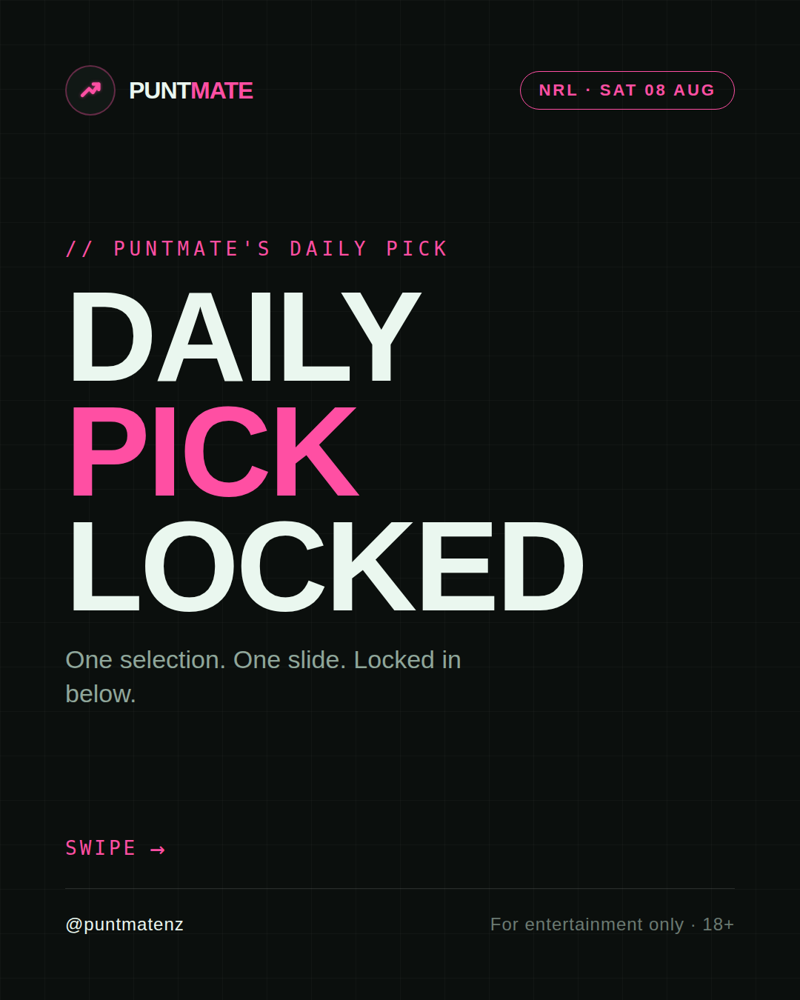
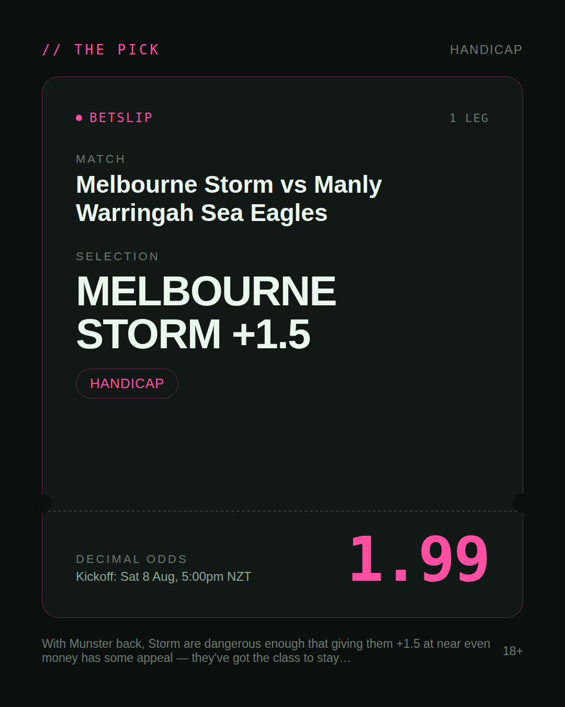
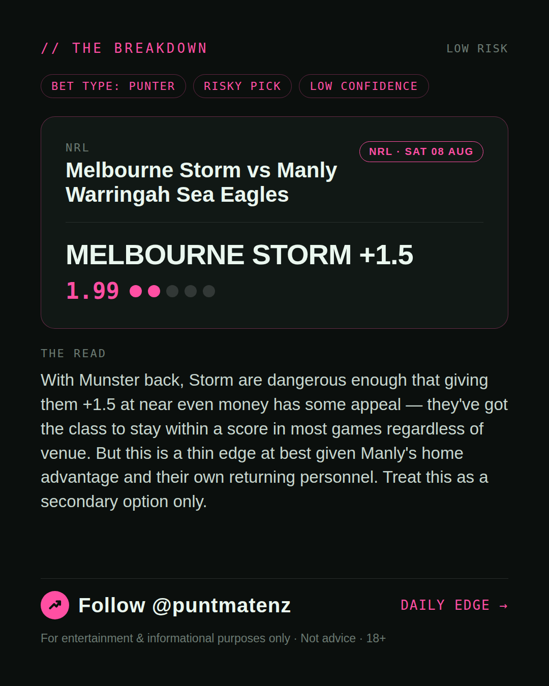
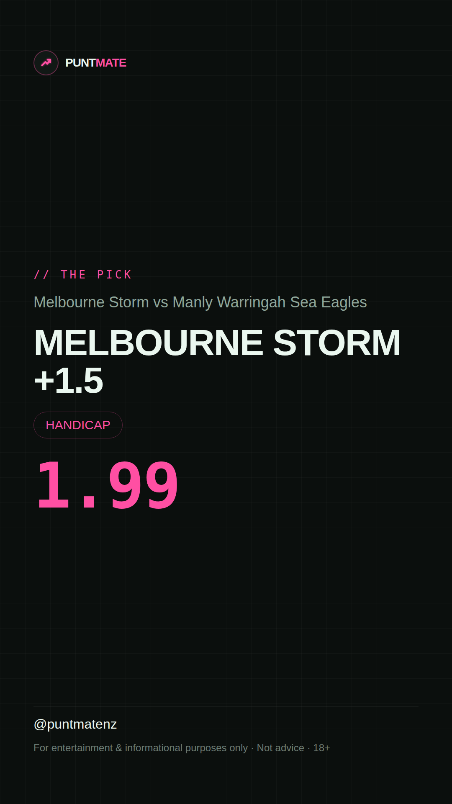

*🎯 PUNTMATE NZ — NRL* 🏟 Melbourne Storm vs Manly Warringah Sea Eagles *PICK:* MELBOURNE STORM +1.5 *ODDS:* 1.99 (Handicap) *BET TYPE: PUNTER* _With Munster back, Storm are dangerous enough that giving them +1.5 at near even money has some appeal — they've got the class to stay within a score in most games regardless of venue. But this is a thin edge at best given Manly's home advantage and their own returning personnel. Treat this as a secondary option only._ ────────────────── 📲 Join Telegram for daily picks ⚠️ For entertainment & informational purposes only. Not advice. 18+.
🎯 NRL — Melbourne Storm vs Manly Warringah Sea Eagles MELBOURNE STORM +1.5 @ 1.99 (Handicap) BET TYPE: PUNTER Solid touch here. Not a lock, but the value's real and the form backs it up. With Munster back, Storm are dangerous enough that giving them +1.5 at near even money has some appeal — they've got the class to stay within a score in most games regardless of venue. But this is a thin edge at best given Manly's home advantage and their own returning personnel. Treat this as a secondary option only. Follow for daily value picks → @puntmatenz ⚠️ For entertainment & informational purposes only. Not advice. 18+. #PuntmateNZ #SportsBetting #NZTAB #NRL
| has_pick | True |
| pick_id | 2026-08-07_Melbourne_Storm_vs_Manly_Warringah_Sea_Eagles |
| run_id | 31213310930 |
| generated_at | 2026-08-07T19:54:48.823070+00:00 |
| post_date | 2026-08-07 |
| match | Melbourne Storm vs Manly Warringah Sea Eagles |
| sport | rugbyleague_nrl |
| sport_label | NRL |
| market | Handicap |
| selection | MELBOURNE STORM +1.5 |
| odds | 1.99 |
| bet_type | PUNTER_BET |
| bet_type_label | BET TYPE: PUNTER |
| bet_type_reason | Solid touch here. Not a lock, but the value's real and the form backs it up. With Munster back, Storm are dangerous enough that giving them +1.5 at near even money has some appeal — they've got the class to stay within a score in most games regardless of venue. But this is a thin edge at best given Manly's home advantage and their own returning personnel. Treat this as a secondary option only. |
| classification | RISKY_PICK |
| risk | RISKY_PICK |
| confidence | LOW |
| confidence_label | LOW |
| final_explanation | With Munster back, Storm are dangerous enough that giving them +1.5 at near even money has some appeal — they've got the class to stay within a score in most games regardless of venue. But this is a thin edge at best given Manly's home advantage and their own returning personnel. Treat this as a secondary option only. |
| public_caution | Keep this one light — the value's there but so is the uncertainty. |
| theme | night |
| carousel_paths | ['data/review/2026-08-07_Melbourne_Storm_vs_Manly_Warringah_Sea_Eagles/cover.png', 'data/review/2026-08-07_Melbourne_Storm_vs_Manly_Warringah_Sea_Eagles/tip.png', 'data/review/2026-08-07_Melbourne_Storm_vs_Manly_Warringah_Sea_Eagles/breakdown.png'] |
| carousel_urls | ['https://raw.githubusercontent.com/kingofthecastle24/puntmate/main/data/cards/2026-08-07_Melbourne_Storm_vs_Manly_Warringah_Sea_Eagles_night_1_cover.png', 'https://raw.githubusercontent.com/kingofthecastle24/puntmate/main/data/cards/2026-08-07_Melbourne_Storm_vs_Manly_Warringah_Sea_Eagles_night_2_tip.png', 'https://raw.githubusercontent.com/kingofthecastle24/puntmate/main/data/cards/2026-08-07_Melbourne_Storm_vs_Manly_Warringah_Sea_Eagles_night_3_breakdown.png'] |
| story_path | data/review/2026-08-07_Melbourne_Storm_vs_Manly_Warringah_Sea_Eagles/story.png |
| story_url | https://raw.githubusercontent.com/kingofthecastle24/puntmate/main/data/cards/2026-08-07_Melbourne_Storm_vs_Manly_Warringah_Sea_Eagles_night_story.png |
| intended_platforms | ['telegram', 'instagram_feed', 'instagram_story', 'facebook'] |
| workflow_state | GENERATED |
| has_punter_multi | False |
| has_gambler_multi | False |
| has_degenerate_multi | False |